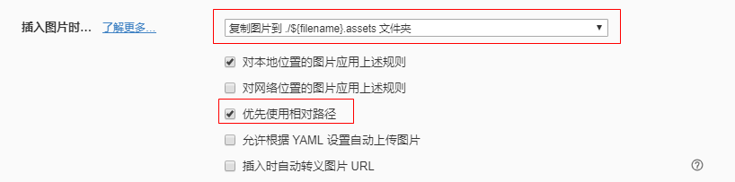

使用Hexo时，兼容typora相对路径的图片
需要插件：https://www.npmjs.com/package/hexo-typora-image
typora设置

参照上图设置
安装插件hexo-typora-image
1 | npm install --save-dev hexo-typora-image |
在scaffolds/post.md中增加typora-copy-images-to: 使用Hexo时，兼容typora相对路径的图片，更改完的内容如下：
1 |
|
_config.yml
将_config.yml中的post_asset_folder改为post_asset_folder: true
使用方法
将post_asset_folder改为True后， 使用hexo new post 文章标题时，会生成一个与文章标题一样的文件夹，用来放置图片，将文章章所有的图片放置在这个文件夹下就可以了。